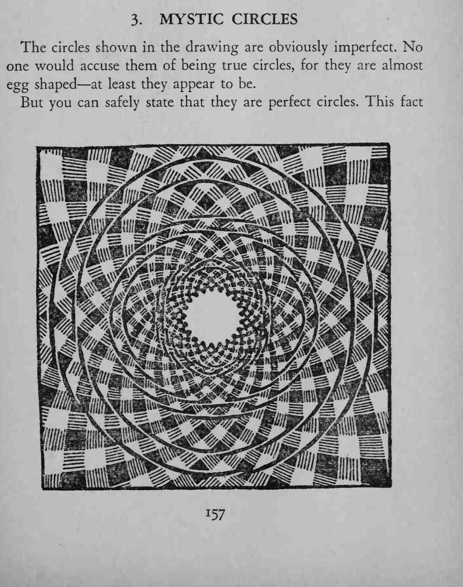
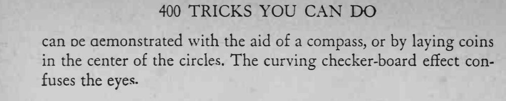

图上几个圆圈看起来歪歪扭扭、像蛋形，可用圆规或硬币一验，全都是正圆。
这是背景线条造成的视觉错觉，别让观众先拿尺子量。


The circles shown in the drawing are obviously imperfect. No one would accuse them of being true circles, for they are almost egg shaped at least they appear to be. But you can safely state that they are perfect circles. This fact can De demonstrated with the aid of a compass, or by laying coins in the center of the circles. The curving checker-board effect confuses the eyes-